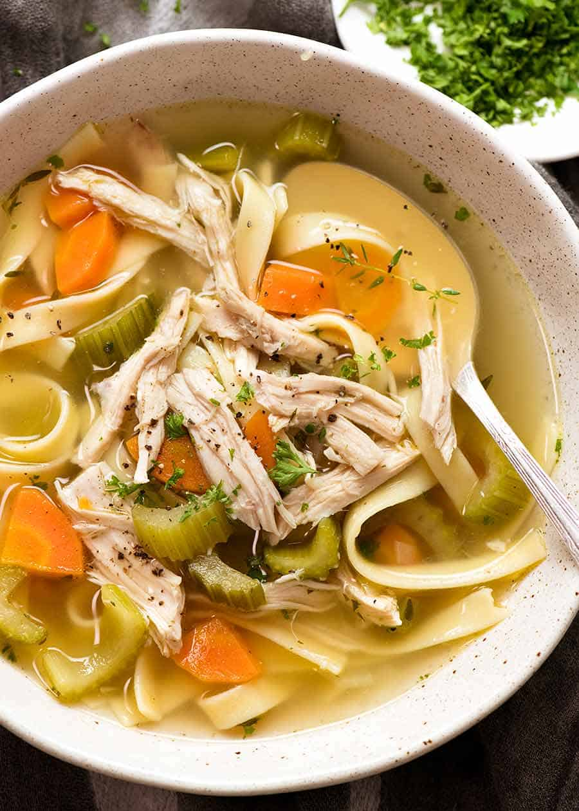

Chicken Noodle
Home

Title: File: Chicken Noodle Soup US.jpg Owner: Nichijyou123 Source: Click here CC: CC BY-SA 4.0
This is a warm and comforting simple dish known for a long time.
Ingredients
- Olive Oil: 1 tbsp
- Medium Onion: 1
- Garlic Cloves: 3
- carrots: 3
- Celery: 3
- Chicken Broth: 8 cups
- Cooked Chicken: 2 cups
- Noodles: 2 cups
- Dried Parsley: 1 tsp
- Salt and Pepper
Steps
- Chop vegtables
- In a large bot head olive oil over medium heat
- Add vegtables and cook for 5-7 minutes
- Add garlic and cook for a 1 more minute
- Pour chicken broth
- Add parsley, salt and pepper
- Bring to a gentle boil
- Add noodles to the boiling broth
- Cook according to package instructions
- Add in the coocked shredded chicken
- simmer for 2-3 minutes
- Add more salt add pepper if needed